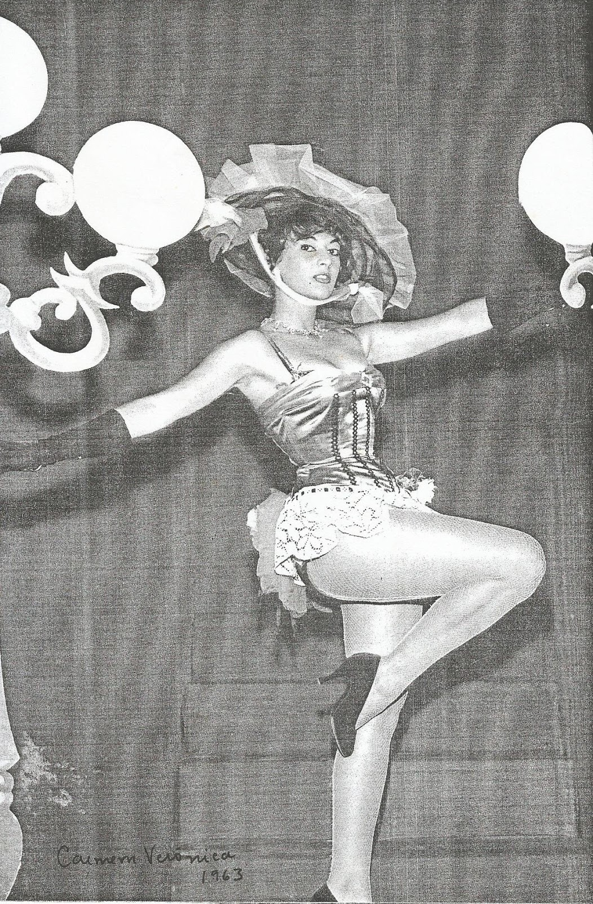

Carmen Verônica
Em 1952, aos dezoito anos, se tornou vedete – ou seja, atriz de teatro de revista – sendo uma das mais famosas da épocas e ficando entre 1953 e 1963 na lista das dez mais belas do jornalista Sérgio Porto (Stanislaw Ponte Preta). Nesta época ficou conhecida como a "Rainha da Frescura" devido à sua voz melosa, suas piscadelas de cílios e o jeito mole de falar. Após encerrar a carreira de vedete em 1965, passou 17 anos afastada da grande mídia antes de retomar a carreira de atriz no humorístico Chico Anysio Show. Em 2005 ganhou destaque ao interpretar a ex-vedete Mary Montilla na telenovela Belíssima.
Vida pessoal
Filha de Jorge Carneiro Alliz e Carmen Rodrigues Varella, passou sua infância em Recife junto de seus irmãos Marco Antônio e Alda. Casou em 1955 com o empresário Jacques Sicart, ficando viúva no ano de 2022. Teve uma filha com Jacques, de nome Carmen Sylvia, nascida em Paris, França.
